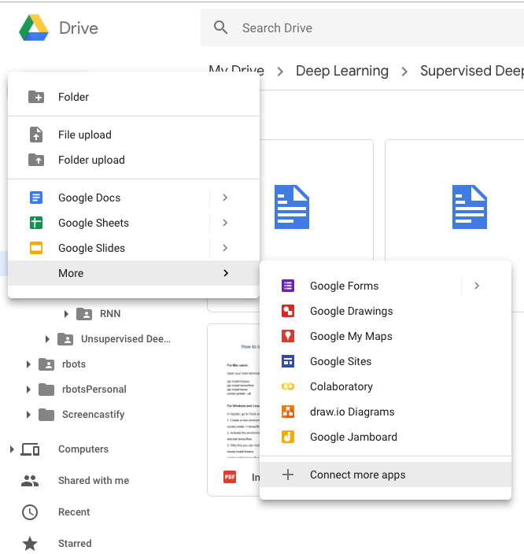

Create a directory structure like below or of your preference.
2. Open Google Colaboratory.
Colaboratory is Jupyter notebook in the form of Software As A Service provided by Google.
You can select it from the options or click on “Connect more apps” if you don’t already have it as an option.

3. Mount Google Drive to Colab Notebook.
from google.colab import drive
drive.mount('/content/gdrive')
You can run linux commands by prefixing the commands with an ‘!’ exclamation.
# List the contents of the directory.
!ls -la /content/gdrive/My\ Drive/Deep\ Learning/Supervised\ Deep\ Learning/ANN/
4. Train and Test simple convnet on the MNIST dataset.
Install Keras
Upload mnist_cnn.py to current folder in your Google Drive.
Run the mnist_cnn code
!python3 /content/gdrive/My\ Drive/Deep\ Learning/Supervised\ Deep\ Learning/ANN/mnist_cnn.py
This is going to run for 12 epochs. This is a good example to try on Google’s free GPU (NVIDIA K80) and notice the difference between the CPU and GPU.
You can run it on GPU by going clicking Runtime>Change runtime type>GPU.
And this is your Hello to Deep Learning World
4. Tips (few other tips on working with Colaboratory).
Load dataset from Google Drive
# Importing the libraries
import pandas as pd
# Importing the dataset
dataset = pd.read_csv('/content/gdrive/My Drive/Deep Learning/Supervised Deep Learning/ANN/Churn_Modelling.csv')
# Display first 5 rows
dataset.head(5)
Download dataset from a url to Google Drive and use it
!wget https://raw.githubusercontent.com/vincentarelbundock/Rdatasets/master/csv/datasets/Titanic.csv /content/gdrive/My\ Drive/Deep\ Learning/Supervised\ Deep\ Learning/ANN/
Install libraries
# Install pytorch and import
!pip install -q http://download.pytorch.org/whl/cu75/torch-0.2.0.post3-cp27-cp27mu-manylinux1_x86_64.whl torchvision
import torch
# Install MxNet and import
!apt install libnvrtc8.0
!pip install mxnet-cu80
import mxnet as mx
# Install XGBoost and import
!pip install -q xgboost==0.4a30
import xgboost
Thanks for being with me so far. Good luck, happy Deep Learning.
comments powered by